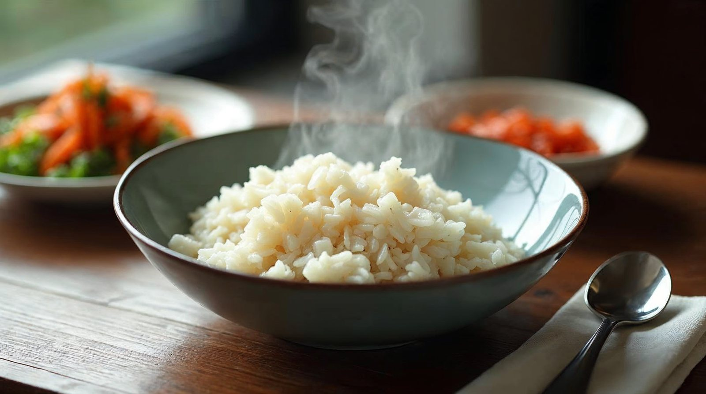
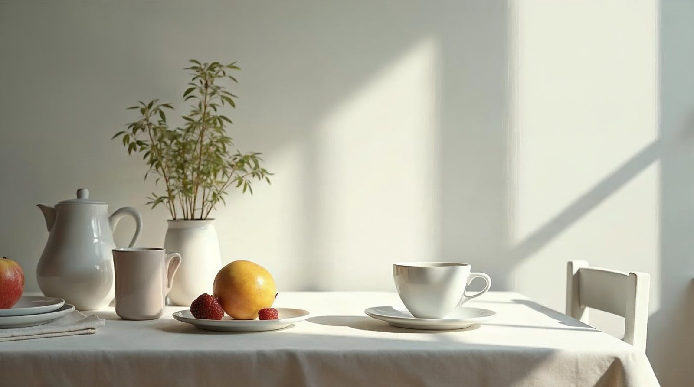
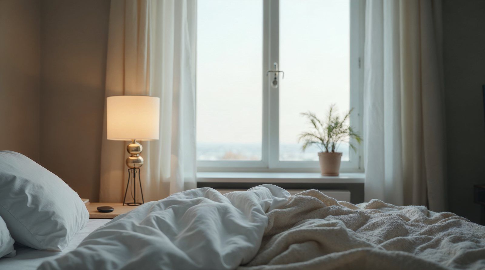
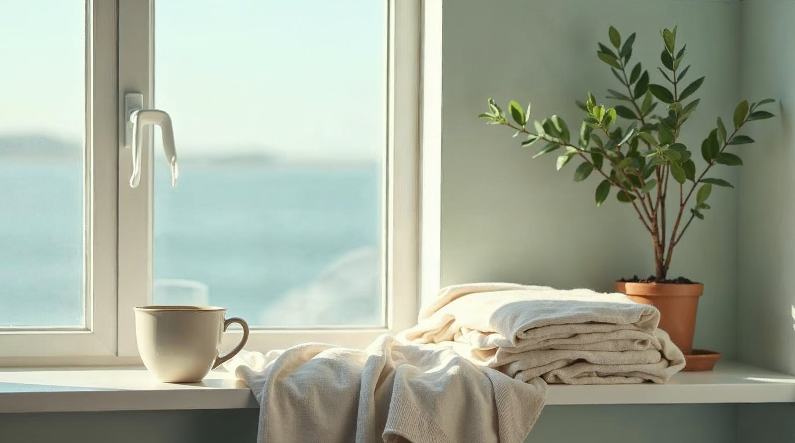
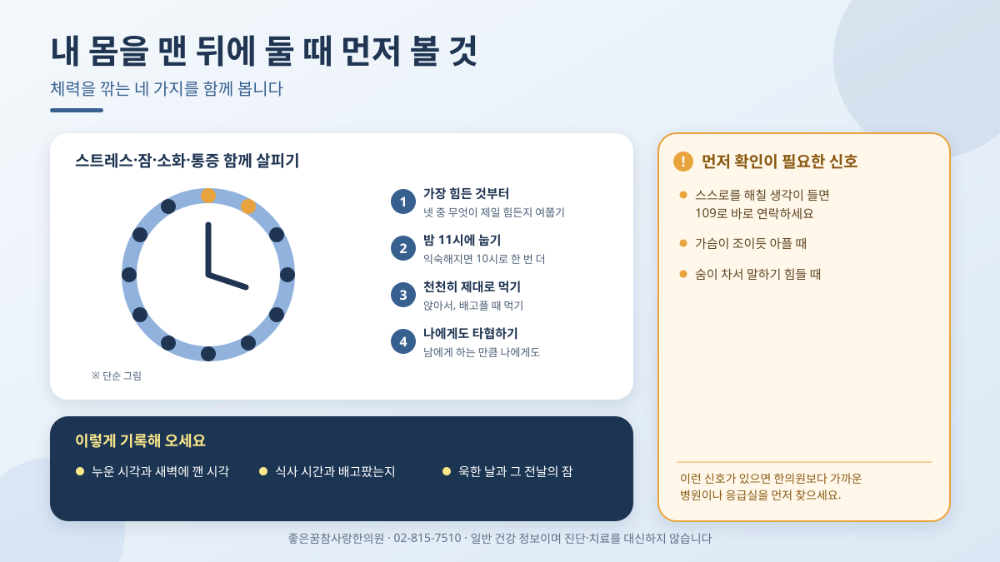

이종호 한의사 감수좋은꿈참사랑한의원 대표원장 (한의사 면허번호 19769)발행 2026-11-26 · 수정 2026-11-27
이 글의 차례
밤 12시가 넘어서야 불을 끄고, 알람이 울리기도 전에 새벽에 눈이 떠지는 분들이 계세요. 일과 가족을 챙기느라 내 몸은 늘 맨 뒤에 둔 분들이죠. 이런 분들 하루를 들어 보면 장면이 비슷해요. 낮에는 일과 사람 사이를 뛰어다니고, 저녁에는 집안일과 식구를 챙기고, 하루가 다 끝나야 겨우 내 시간이 생겨요.
목과 등은 늘 굳어 있고, 잠이 모자란 날은 작은 말에도 욱하시고요. 먼저 이 말씀부터 드리고 싶어요. 그렇게 지치는 게 당연해요. 몸이 약해서가 아니라, 그만큼 많이 쓰셨으니까요.
그래서 저는 이런 분께 체력과 면역을 가장 많이 깎아 먹는 네 가지부터 같이 살피자고 말씀드려요. 스트레스, 잠 부족, 소화 불량, 통증이에요. 이 넷은 서로 얽혀 있어서 따로 떼어 보지 않거든요.
생활에서 부탁드리는 것도 많지 않아요. 두 가지뿐이에요. 밤 10시나 11시에 눕기, 그리고 빨리 먹거나 애매하게 먹지 않기예요.
그래도 이분들은 좀처럼 아프다는 말을 먼저 꺼내지 않으세요. 그래서 이 글에는 그런 분들께 제가 진료실에서 실제로 드리는 말씀을 차례대로 옮겨 두었어요.
왜 체력이 좋은 분도 이렇게 바닥이 날까요
저는 질문을 거꾸로 드립니다. 체력이 왜 떨어졌느냐고 묻기보다 "내 체력과 면역을 가장 많이 까먹는 게 무엇일까요?" 하고 여쭙니다. 떨어진 것을 채우기 전에 새는 곳부터 찾아보자는 뜻이지요.
이야기를 들어 보면 타고난 체력은 좋은 분이 적지 않습니다. 체력이 있으니 남보다 오래 버티고, 그만큼 세게 씁니다. 체력이 약한 게 아니라 좋은 체력을 너무 세게 쓴 것이지요. 그냥 두면 회복할 힘이 있는데, 소모가 너무 많은 겁니다.
그래서 일을 그만두시라는 말은 하지 않습니다. 일을 다 내려놓으면 몸이야 편해지겠지만, 현실에서 그럴 수 있는 분이 얼마나 될까요. 그 대신 소모가 큰 곳을 찾아 막아 보자고 합니다.
저는 이 상태를 통장에 빗대곤 합니다. 하고 싶은 일도, 챙길 일도 많은데 체력이라는 잔고가 바닥난 상태입니다. 사고 싶은 것은 많은데 돈이 없는 셈이지요. 다시 채워 넣어야 하는데, 무엇으로 채울까요? 답은 의외로 소박합니다. 천천히 먹는 것, 그리고 잠을 넉넉히 자는 것.
몸을 오래 함께 지낸 친구라고 생각해 보셔도 좋습니다. 사람은 아이가 위험에 처하면 없던 힘도 냅니다. 몸은 그만큼 힘을 끌어올릴 줄도 알고, 거꾸로 내려놓을 줄도 압니다. 그동안 나를 도와준 친구가 "나도 할 만큼 했으니 좀 눕고 싶다"고 말하는 때가 있는 것이지요.
저는 이럴 때 몸이 일부러 힘을 빼서 나를 좀 쉬게 하려는 것 같다고 봅니다. 그런데 우리는 지친 친구에게 단것 하나 쥐여 주며 조금만 더 하자고 조르곤 합니다.
의욕까지 바닥난 느낌이라면 의욕이 없고 번아웃처럼 지칠 때는 한의원에서 무엇을 먼저 묻나요?도 함께 읽어 보세요.
네 가지를 함께 보는 이유
흔히 스트레스, 잠, 소화 세 가지를 먼저 이야기하지만, 저는 여기에 통증을 하나 더 얹습니다. 아프면 결국 또 스트레스를 받거든요. 그래서 통증, 스트레스, 잠, 소화, 이렇게 넷입니다.
넷은 서로 꼬리를 물고 맴돕니다. 아프면 신경이 곤두서고, 마음이 답답하면 잠이 얕아집니다. 잠이 모자란 날은 더 예민해지고, 예민한 날은 밥이 잘 넘어가지 않습니다. 하나만 붙잡고 있으면 나머지 셋이 그 자리를 다시 흔들기 쉽습니다.
제가 늘 말씀드리는 몸의 바탕은 '잘 먹고, 잘 싸고, 잘 자고, 마음 편하고, 몸 따뜻하게'입니다. 이런 분들은 이 가운데 앞의 넷이 한꺼번에 흔들려 있는 경우가 많습니다. 하나씩 차례를 기다리게 하지 않고 함께 살피는 까닭입니다.
넷 가운데 무엇이 가장 힘든지도 여쭙니다. "소화가 안 되는 게 더 힘드세요, 스트레스 받는 게 더 힘드세요?" 이렇게 여쭈면 스트레스를 꼽는 분이 적지 않습니다. 속이 불편한 것은 한 끼 쉬어 가며 달래기라도 하지만, 마음의 답답함은 풀 곳이 마땅치 않기 때문일 겁니다.
참는 힘보다 덜 괴로운 쪽이 먼저입니다
답답함이 쌓이면 한 번씩 욱하고 터지기도 합니다. 터뜨려 봐야 나만 손해라는 것은 누구보다 본인이 잘 압니다. 그래도 말이 먼저 나옵니다. 그대로 삼키면 숨이 막힐 것 같으니까요.
저는 이런 분께 더 참으시라고 하지 않습니다. 사람은 괴로우면 말하게 되어 있습니다. 그래서 참는 힘을 기르는 것보다 애초에 덜 괴롭게 만드는 쪽이 먼저라고 생각합니다. 괴롭지 않아야 모르는 척 웃으며 넘어갈 수도 있지요.
하나 덧붙이는 말이 있습니다. 모든 일이 그렇지는 않겠지만, 나를 힘들게 하는 일도 상대가 일부러 한 것이 아닐 때가 많습니다. 저마다 살다 보니 민폐가 된 경우지요. 그렇게 생각하면 마음에 걸린 가시가 조금은 덜 아픕니다.
욱하고 나서 후회하는 일이 잦다면 사소한 일에 화가 확 났다가 나중에 후회하는 일이 잦을 때는 어떻게 살피나요?도 함께 보셔도 좋습니다.
10시에 누우면 졸업, 11시에 누우면 성공
자정에 누워 새벽에 깨면 하루 다섯 시간 남짓입니다. 저는 그 잠을 두고 고3 수험생 같다고 합니다. 그렇게 몇 년을 버텨 오셨다면 타고난 체력이 좋은 덕일 겁니다. 다만 잠이 모자라면 누구라도 예민해지기 쉽습니다.
알람보다 먼저 깨는 짧은 잠이 이어진다면 저는 불면으로 보고 함께 살핍니다. 목표는 단순합니다. 눕는 시각을 자정에서 밤 10~11시로 당기는 것입니다.
그래서 이렇게 말씀드립니다. "10시에 누우면 졸업, 11시에 누우면 성공." 10시면 더할 나위 없고, 11시만 돼도 충분히 잘하셨다는 뜻입니다. 대개 한숨부터 쉬십니다. 쉽지 않다는 걸 저도 압니다. 그래도 잠만큼은 비켜 가기 어렵습니다.
먼저 안 자는 것인지, 못 자는 것인지를 나눠 봅니다. 10시에 한번 누워 보면 알 수 있지요. 누웠는데도 잠이 오지 않는다면 못 자는 쪽입니다. 눕기만 하면 잠드는 분이었다면 스트레스가 애초에 이만큼 몸을 흔들지 않았을지도 모릅니다.
일찍 눕지 못하는 데에는 이유가 하나 더 있습니다. 억울해서입니다. 하루를 남의 일과 집안일로 다 보내고 밤 12시에야 내 시간이 생겼는데, 그걸 그냥 자 버리기가 억울한 것이지요. 저는 그 마음을 압니다.
일하는 시간을 당장 줄이기 어렵다면, 밤의 그 시간을 잠에 양보해 달라고 부탁드립니다. 하루 일을 다 마치면 내 시간은 잠시 내려놓고 눕는 것이지요. 낮잠으로 메우는 방법도 있긴 합니다. 그래도 저는 밤 10시, 11시에 눕는 쪽을 먼저 권합니다.
새벽에 자꾸 깨는 것도 함께 봅니다. 다음 날 신경 쓸 일이 있으면 늦을까 봐 밤새 서너 번씩 깨는 분들이 있습니다. 이런 잠이 이어지면 낮에 더 예민해지고, 될 일도 잘 풀리지 않기 쉽습니다.
새벽 잠 깸은 새벽에 자꾸 잠이 깨는 이유는 무엇이고, 어떤 점을 살펴보나요?에서 더 자세히 다뤘습니다.
잠이 얕은 분들은 머리만 대면 잠드는 사람이 오히려 신기하다고들 하십니다. 저도 그런 편이라 푹 자는 분들이 참 부럽습니다. 몸이 그리 튼튼하지 않아 제 몸을 들여다보며 배운 것이 많은데, 스트레스도 겪어 봐야 그 답답함을 알겠더군요.

애매하게 먹을 바엔 제대로, 아니면 거르기
식사에서 제가 먼저 고치자고 하는 것은 빨리 먹는 습관입니다. 바쁜 분일수록 밥을 마시듯 드십니다. 빨리 먹어도 별 탈이 없으니 속은 괜찮다고 여기기 쉬운데, 그렇다고 소화가 잘된다고 볼 수는 없습니다.
두 번째는 애매하게 먹지 않는 것입니다. 진료실에서는 이렇게까지 말씀드립니다. 애매하게 먹을 거면 차라리 거르시라고요. 먹을 때는 앉아서 천천히 제대로 먹고, 그럴 수 없을 때는 비워 두는 습관을 들여 보시라는 뜻입니다.
굶으라는 말은 아닙니다. 대충 넘긴 한 끼보다 다음 끼니를 제대로 드시는 게 몸에 덜 부담이 된다는 것이지요. 다만 당뇨약이나 인슐린을 쓰는 분은 끼니를 거르기 전에 처방한 곳과 먼저 상의해 주세요.
세 번째는 배고프지 않으면 먹지 않는 것입니다. 배가 고프지 않은데도 때가 됐다고 꼬박꼬박 챙겨 드시는 분들이 있습니다. 저는 배고플 때 먹는 밥은 힘이 되고, 배고프지 않을 때 먹는 간식은 살이 된다고 말씀드립니다.
그래서 집에서 차린 밥은 챙겨 드시되, 밖에서 사 먹는 끼니와 간식은 줄여 보시라고 합니다. 맵고 짜고 자극적인 음식에 속이 탈 나는 분이라면 더 그렇고요.
마지막은 억지로 더 먹지 않는 것입니다. 기운이 없으니 더 먹어야 하나 싶어, 배가 부른데도 한 숟가락씩 더 뜨는 분들이 있습니다. 그런데 속이 받아 주지 않는 양을 밀어 넣으면 오히려 소화 불량을 부르기 쉽습니다. 몸무게가 걱정되신다면 억지로 늘리기보다 진료 때 함께 살펴보면 됩니다.
천천히 먹기와 잠 넉넉히 자기, 이 두 가지는 제가 대신해 드릴 수 없는 일입니다. 그래서 저는 이것을 둘이 하는 팀플레이라고 부릅니다. 진료실에서 제가 할 일이 있고, 집에서 본인이 하실 일이 있습니다.

남에게 타협하는 만큼 나에게도
진료실에서는 남에게는 너그러워도 나 자신과는 타협하지 않겠다는 마음으로 살아온 분들을 종종 뵙습니다. 한번 맡은 일은 끝까지 해내야 마음이 놓이는 분들이지요. 그 마음 덕분에 여기까지 오셨다는 것도 압니다.
그래도 저는 그런 다짐을 들으면 걱정이 앞섭니다. 나에게만 가혹한 채로 지내면 몸이 끝까지 버텨 주기 어렵습니다. 그래서 부탁드립니다. 남에게 타협하는 만큼은 나에게도 타협해 주세요.
그렇다고 나에게만 한없이 너그러워지라는 뜻은 아닙니다. 남보다 나에게 더 쉽게 타협하는 것은 게으름에 가깝지요. 남들이 사는 만큼의 기준선을 나에게도 허락하자는 것입니다. 나도 사람이니까요.
처음부터 거기까지 바라지는 않습니다. 그 대신 이것 하나는 부탁드려도 될까요? 나를 다그치던 고삐를 오늘부터 조금만 늦춰 주세요.
이런 분들과 함께 가려는 곳이 어디냐고 물으시면 이렇게 답합니다. 스스로 느끼기에 '이렇게 편해도 되나, 내가 뭔가 잘못된 건 아닌가' 싶어지는 지점입니다. 본인에게는 멍하게 느껴지는 그 자리가 다른 사람 눈에는 딱 보통이거든요.
그러려면 지금 있는 자리에서 한참 내려와야 합니다. 이건 의지만으로 잘 되지 않습니다. 마음만 먹어 주시면, 내려오는 길은 진료실에서 같이 찾아봅시다.
아생연후살타, 내가 먼저 살아야 합니다
바둑에 아생연후살타(我生然後殺他)라는 말이 있습니다. 내가 먼저 살고 난 다음에 상대를 공격하라는 뜻입니다. 바둑에서는 두 집을 지어야 돌이 삽니다. 내 집도 짓지 못한 채 상대를 잡으러 나서면 버티기 어렵지요.
저는 이 말을 내 몸을 맨 뒤에 두는 분들께 꼭 들려드리고 싶습니다. 일도 가족도 내가 살아 있어야 지킬 수 있습니다. 내 건강을 먼저 지키는 것은 이기적인 일이 아니라 일과 가족을 지키기 위한 전제입니다.
지금 아픈 것은 참을 수 있을지도 모릅니다. 이미 오래 참아 오셨으니까요. 다만 참고 참다 몸이 먼저 주저앉으면, 그 무게는 결국 내가 지키려던 사람들에게도 함께 건너갑니다.
가족이 바라는 것은 내가 무엇을 더 해 주는 것보다, 건강하게 곁에 있어 주는 것일 때가 많습니다. 이 말은 꼭 기억해 두셨으면 합니다.
그래서 이런 질문도 드려 봅니다. 아끼는 사람이 지금의 나처럼 산다면 어떤 마음이 들까요? 지금 며칠 쉬어야 한다면 마음 놓고 쉴 수 있을까요? 둘 다 선뜻 답하기 어렵다면, 내가 하루쯤 빠져도 일과 집안이 굴러가도록 맡은 일을 조금씩 나눠 둘 때입니다.
저도 겪어 보니, 일을 덜고 쉬는 시간을 늘려도 마음의 짐이 곧바로 가벼워지지는 않더군요. 몸을 쉬게 하는 일과 마음을 덜 괴롭게 하는 일을 함께 챙겨야 하는 까닭입니다.
치료하는 사람은 늘 운이 나쁠 때를 생각해 두게 됩니다. 살면서 굴곡이 없을 수는 없으니까요. 작은 일에도 크게 흔들리는 상태로는 큰일이 닥쳤을 때 버티기가 더 힘듭니다. 그래서 큰일이 없는 지금, 몸과 마음의 바닥부터 다져 두자고 권합니다.
치료의 목적은 독립입니다
저는 한의원 치료가 언젠가 그만 다니셔도 되도록 돕는 과정이라고 생각합니다. 계속 저를 찾으시게 하는 것이 목표가 아닙니다. 스스로 지낼 수 있도록 곁에서 거드는 데까지가 제 몫이지요.
치료 없이는 못 지내는 몸이 되는 것을 저는 바라지 않습니다. 제가 아는 한의학은 그 사람이 스스로 서서 혼자서도 행복하기를 바라는 마음입니다. 엄마의 마음을 떠올려 보시면 됩니다.
엄마는 아이를 언제까지나 곁에 두고 사는 사람이 아니라, 혼자서도 잘 살도록 독립시키는 사람이지요. 함께 살면 마음이야 좋겠지만, 그게 엄마가 바라는 끝은 아닙니다.
그래서 제가 그리는 끝은 '치료를 받지 않아도 지낼 수 있겠다'는 마음이 드는 때입니다. 거기까지 가는 길에 잠과 식사를 바꾸는 일은 빼놓기 어렵습니다. 생활은 그대로 둔 채 치료에만 기대면, 치료를 내려놓기도 그만큼 어려워지니까요.
진료실에 오시는 분들은 대개 고생고생하다 잠깐 쉬러 오신 분들입니다. 그래서 그 시간만큼은 편하게 해 드리고 싶습니다. 다만 쉬러 오신 그 걸음이 언젠가는 오지 않아도 되는 걸음이 되기를 바랍니다.
먼저 이렇게 여쭙니다
- 통증, 스트레스, 잠, 소화 가운데 요즘 무엇이 가장 힘드신지
- 몇 시에 눕고 몇 시에 깨시는지, 누워도 잠이 안 오는지 아직 눕지 않는 것인지
- 다음 날 신경 쓸 일이 있을 때 새벽에 몇 번쯤 깨시는지
- 식사를 몇 분 만에 마치시는지, 배고프지 않은데 드실 때가 있는지
- 찬 것과 매운 것 가운데 무엇에 더 탈이 나는지, 커피를 마시면 잠이나 속이 어떤지
- 대변이 물에 풀어지는지 모양이 있는지, 보고 나서 시원한지
- 욱하거나 가슴이 답답한 날이 일주일에 몇 번쯤인지, 추위와 더위 가운데 무엇을 더 타시는지

일상에서 먼저 해 볼 수 있는 것
- 눕는 시각을 밤 11시로 당겨 보고, 익숙해지면 10시로 한 번 더 당기기
- 하루 일을 마치면 밤의 내 시간은 잠시 내려놓고 바로 눕기
- 숟가락을 자주 내려놓으며 천천히 먹고, 애매할 바엔 한 끼를 비우기(당뇨약·인슐린을 쓰는 분은 먼저 처방한 곳과 상의)
- 배고프지 않으면 먹지 않기, 밖에서 사 먹는 끼니와 간식 줄이기
- 기운을 내려고 배가 부른데도 억지로 더 먹지 않기
- 남에게 해 주는 만큼 하루 한 번은 나에게도 '오늘은 여기까지'라고 말해 주기
한꺼번에 다 하지 않으셔도 됩니다. 잠 하나, 식사 하나만 골라 일주일 해 보시고 어디서 막혔는지 들려주세요. 지키기 어려웠던 사정까지 들어야 다음 걸음을 함께 정할 수 있습니다.

한의원에서 함께 살필 수 있는 경우
- 잠, 소화, 통증, 스트레스가 한꺼번에 얽혀 무엇부터 손대야 할지 모를 때
- 일찍 누워도 잠들기 어렵거나 새벽에 자꾸 깨서 낮에 예민해질 때
- 목과 등이 늘 굳어 있고, 지친 날이면 사소한 말에도 욱하게 될 때
처음 오시면 모든 분께 그렇듯 맥부터 짚습니다. 양손을 올려 두신 채로 요즘 무엇이 가장 힘든지, 몇 시에 주무시는지, 식사와 대변은 어떤지, 추위를 타시는지 여쭙습니다. 필요하면 혀와 배도 살피고, 다른 병원 검사 결과나 드시는 약도 함께 확인합니다.
그날 가장 불편한 곳은 원장이 직접 치료하고, 침이나 추나, 한약 가운데 무엇이 맞을지는 진찰한 뒤 함께 정합니다. 다음에 오시면 지난번 이야기에서부터 이어서 여쭙습니다.
이렇게 기록해 오시면 상담이 쉬워집니다
- 일주일 동안 누운 시각, 잠든 것 같은 시각, 새벽에 깬 시각
- 끼니마다 먹는 데 걸린 시간, 배고파서 먹었는지 때가 돼서 먹었는지
- 밖에서 사 먹은 끼니와 간식, 그날 대변의 모양과 시원했는지
- 욱했던 날과 그 전날의 잠, 넷 가운데 가장 힘든 것의 순서
- 드시는 약의 이름과 용량(수면제나 마음을 다스리는 약도 포함)
드시는 약은 처방한 의사와 상의 없이 줄이거나 끊지 마시고, 적어 오셔서 함께 확인해 주세요.
기록이라고 하니 또 숙제처럼 들리실 수 있겠어요. 꼼꼼하게 안 쓰셔도 돼요. 빈칸이 많아도 괜찮아요. 빈칸이 많았던 날이 어떤 날이었는지도 저한테는 중요한 이야기거든요.
치료는 제가 맡을게요. 대신 하나만 부탁드려요. 일주일에 하루라도 11시에 누워 보세요. 딴 건 지금처럼 하셔도 돼요.
다음에 오시면 이것부터 여쭐게요. 지난 일주일 동안 몇 시에 누우셨는지, 그리고 남에게 해 준 만큼 나에게도 한 번쯤 타협해 주셨는지요. 11시에 한 번 누우셨다면 그것만으로도 반가운 얘깃거리예요.
그동안 이 몸으로 참 많은 일을 해 오셨어요. 이제는 몸의 차례예요. 내가 먼저 살아야 지키고 싶은 것도 오래 지킬 수 있거든요.
이런 증상은 먼저 확인이 필요합니다
- 스스로를 해칠 생각이 들면 ☎ 109로 바로 연락하세요.
- 가슴이 조이듯 아프거나 숨이 차서 말하기 힘들 때
이런 신호가 있으면 한의원보다 가까운 병원이나 응급실을 먼저 찾으세요.

여쭙는 것
- 통증, 스트레스, 잠, 소화 가운데 요즘 무엇이 가장 힘드신지
- 몇 시에 눕고 몇 시에 깨시는지, 누워도 잠이 안 오는지 아직 눕지 않는 것인지
- 다음 날 신경 쓸 일이 있을 때 새벽에 몇 번쯤 깨시는지
생활에서 해 볼 것
- 눕는 시각을 밤 11시로 당겨 보고, 익숙해지면 10시로 한 번 더 당기기
- 하루 일을 마치면 밤의 내 시간은 잠시 내려놓고 바로 눕기
- 숟가락을 자주 내려놓으며 천천히 먹고, 애매할 바엔 한 끼를 비우기(당뇨약·인슐린을…
한의원에서 함께 살필 것
- 잠, 소화, 통증, 스트레스가 한꺼번에 얽혀 무엇부터 손대야 할지 모를 때
- 일찍 누워도 잠들기 어렵거나 새벽에 자꾸 깨서 낮에 예민해질 때
- 목과 등이 늘 굳어 있고, 지친 날이면 사소한 말에도 욱하게 될 때
먼저 확인이 필요한 신호
- 스스로를 해칠 생각이 들면 109로 바로 연락하세요.
- 가슴이 조이듯 아프거나 숨이 차서 말하기 힘들 때
한눈에 보는 표
| 구분 | 핵심 |
|---|---|
| 여쭙는 것 | 통증, 스트레스, 잠, 소화 가운데 요즘 무엇이 가장 힘드신지 몇 시에 눕고 몇 시에 깨시는지, 누워도 잠이 안 오는지 아직 눕지 않는 것인지 |
| 생활에서 해 볼 것 | 눕는 시각을 밤 11시로 당겨 보고, 익숙해지면 10시로 한 번 더 당기기 하루 일을 마치면 밤의 내 시간은 잠시 내려놓고 바로 눕기 |
| 한의원에서 함께 살필 것 | 잠, 소화, 통증, 스트레스가 한꺼번에 얽혀 무엇부터 손대야 할지 모를 때 일찍 누워도 잠들기 어렵거나 새벽에 자꾸 깨서 낮에 예민해질 때 |
| 먼저 확인이 필요한 신호 | 스스로를 해칠 생각이 들면 109로 바로 연락하세요. 가슴이 조이듯 아프거나 숨이 차서 말하기 힘들 때 |
자주 묻는 질문
일을 줄이기 어려운데 무엇부터 바꾸면 좋을까요?
일하는 시간을 당장 줄이기 어렵다면 밤의 내 시간부터 잠에 양보해 보세요. 눕는 시각을 11시로 당기는 것이 첫걸음이고, 식사는 천천히, 애매하게 먹지 않는 것부터 시작합니다.
10시에 누워도 잠이 안 오면 어떻게 하나요?
누웠는데 잠이 안 오는 것인지, 습관 때문에 아직 눕지 않는 것인지부터 나눠 봅니다. 일주일쯤 누운 시각과 깬 시각을 적어 오시면 진료에서 잠의 모양을 함께 살핍니다.
기운이 없으니 더 챙겨 먹어야 하지 않나요?
기운을 내려고 배고프지 않은데 더 드시면 속이 더 무거워지기 쉽습니다. 배고플 때 한 끼를 제대로, 천천히 드시는 편을 권합니다.
한의원 치료는 계속 다녀야 하나요?
저는 치료의 목적을 스스로 건강을 지킬 수 있도록 독립하시는 데 둡니다. 얼마나 다닐지는 미리 정해 두기보다 진찰하며 함께 정하고, 잠과 식사를 같이 바꿔 가며 치료를 받지 않아도 지낼 수 있겠다는 마음이 드는 때를 찾습니다.
좋은꿈참사랑한의원은 재진 때 지난번 이야기부터 이어서 여쭙니다. 진료시간과 예약은 오시는 길에서 확인하세요.
어디서 상담받을 수 있나요?
좋은꿈참사랑한의원은 서울 동작구 만양로2길 2 신성빌딩 3층·5층(서울 동작구 상도동, 7호선 상도역 3번 출구 근처)에 있습니다. 한의사 3명(이종호 대표원장, 조영기 수석진료원장, 정원영 진료원장)이 진료합니다. 진료시간은 평일 09:30~20:00(점심 13:00~14:00), 토·일·공휴일 09:30~15:00이며, 방문 전 전화로 확인을 권합니다. 예약은 네이버 예약, 카카오톡 상담, 전화 02-815-7510로 받습니다.
이 글은 일반적인 건강 정보이며 개인의 진단이나 치료를 대신하지 않습니다. 증상이 있거나 복용 중인 약이 있다면 진료를 통해 확인하세요. 치료 효과는 개인마다 다를 수 있습니다.
작성 기준: 일반적으로 알려져 있는 건강 정보를 참고해 정리했습니다(대표원장 감수). 증상 기록은 1~2주 동안 하루 1회, 비슷한 시간에 적어 오시면 지난 상태와 비교하기 쉽습니다.